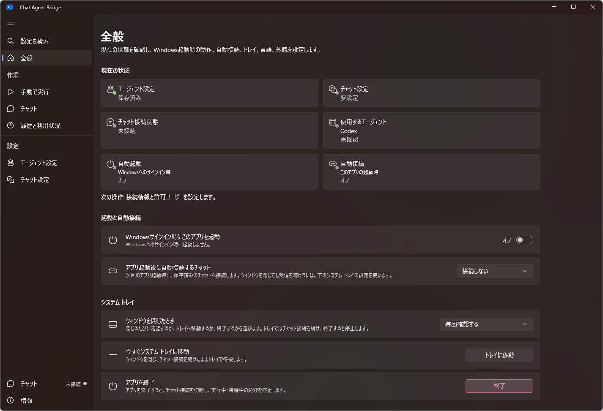
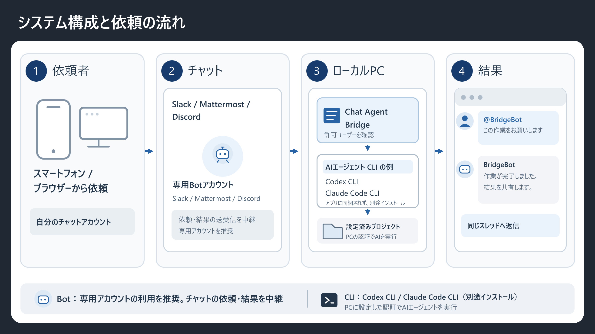
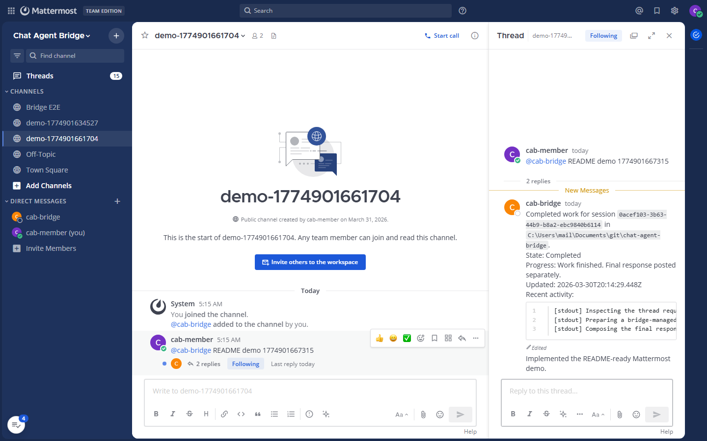
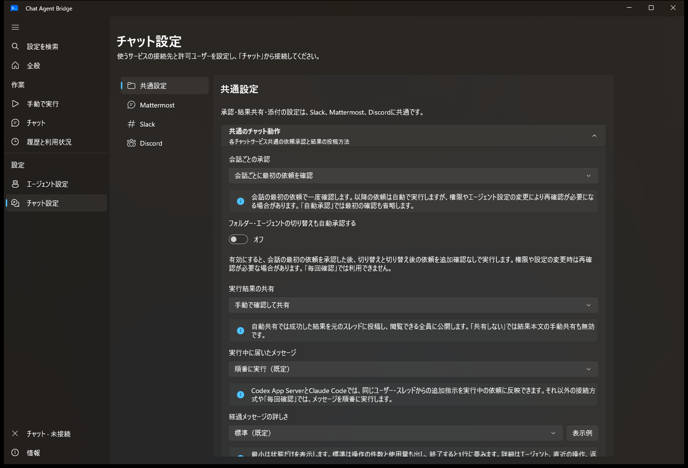
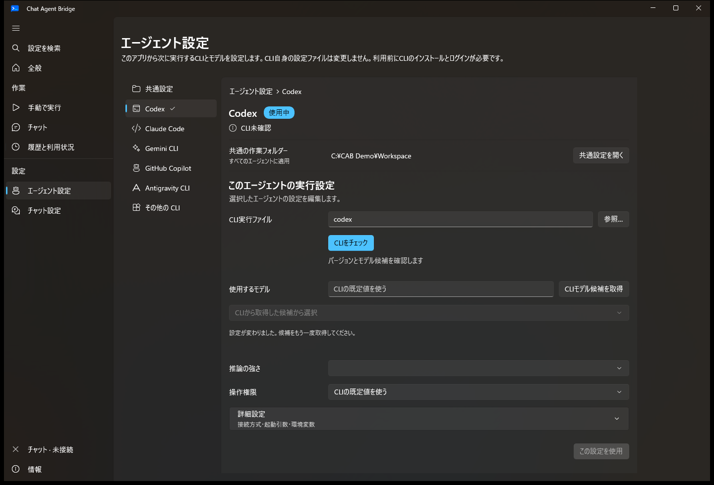
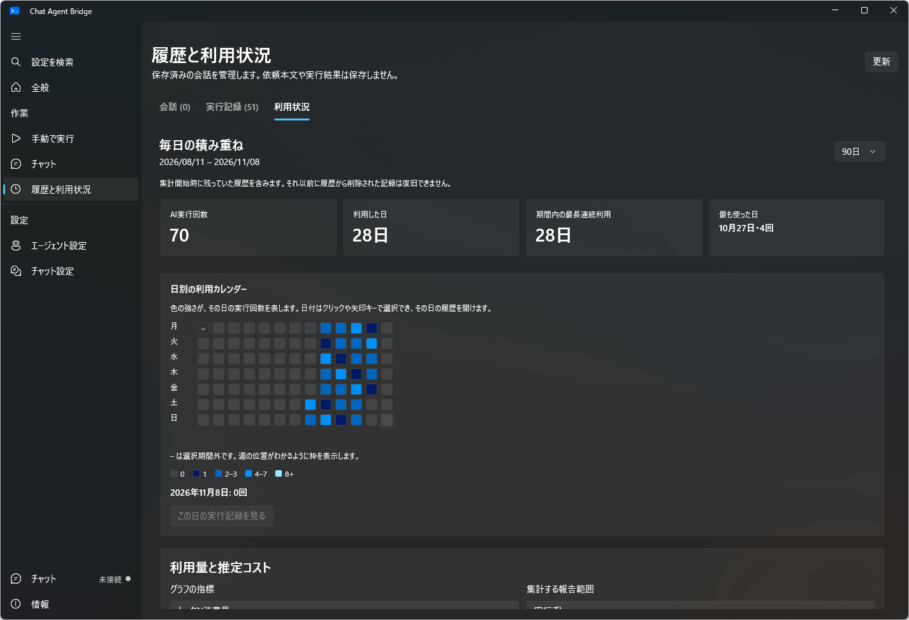
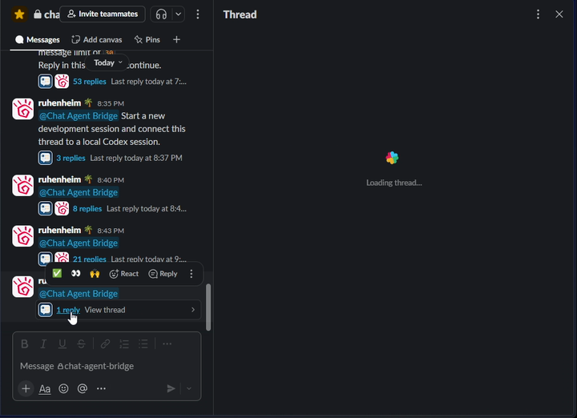

Chat Agent Bridge
Slack・Mattermost・Discord に投稿した依頼を、Windows PC 上の AI エージェント（CLI）に渡して実行する常駐アプリです。結果は同じスレッドに返り、続きもそのスレッドで頼めます。
開発プレビュー版の非公式アプリです。各 AI サービスやチャットサービスの公式アプリではありません。


仕組み


01チャットに投稿
外出先のスマートフォンや別の PC から、Bot へのメンションか !cab で依頼を書きます。操作する側の端末に CLI は要りません。
02PC で受け取って確認
Windows PC の Chat Agent Bridge が投稿を受け取り、許可ユーザーかどうかと承認設定を確認します。承認が必要な依頼は、PC で承認するまで待ちます。
03CLI が作業フォルダーで実行
選んだ CLI（Codex、Claude Code など）が、信頼済みの作業フォルダーで依頼を実行します。AI サービスとの通信は各 CLI の設定どおりです。
04結果を同じスレッドへ
既定では PC で内容を見てから送ります。自動返信にもできます。同じスレッドに返信すると会話が続きます。
できること
チャットから依頼して、同じスレッドで続ける
Slack、Mattermost、Discord に対応しています。スレッドごとに会話が分かれ、返信がそのまま追加の依頼になります。経過メッセージは「最小・標準・詳細」から選べ、標準では完了時に操作件数と使用量の1行にまとまります。


承認と共有は自分で決める
依頼の承認は「毎回・会話の最初だけ・自動」、結果の共有は「手動・自動・共有しない」から選びます。許可ユーザー、受け付けるチャンネルとスレッド、信頼する作業フォルダーもここで絞り込みます。


使う CLI とモデルを切り替える
Codex、Claude Code、Gemini CLI、GitHub Copilot CLI、Antigravity CLI に対応し、Kiro CLI・Qwen Code・Kimi Code CLI・Muse Code CLI はプレビュー対応です。会話ごとにエージェントとモデルを変えられ、切り替えるときは引き継ぎメモを渡すか選べます。


履歴と利用量を見返す
会話の一覧、実行と操作の記録、日別の利用カレンダー、トークン数とキャッシュ利用率のグラフを表示します。推定コストは公開料金からの参考値で、依頼本文や結果の本文は保存しません。


画面


始め方
| OS | Windows 10（1809 以降）、Windows 11 |
|---|---|
| CPU | x64 / ARM64（それぞれ専用の ZIP） |
| 追加の導入物 | なし（管理者権限・.NET ランタイム不要） |
| CLI | 利用する CLI を各自でインストールしてログイン |
| チャット | Slack（Socket Mode）、Mattermost（Bot トークン）、Discord（Gateway） |
| ネットワーク | PC からチャットサービスへ接続するだけ。公開 URL やポート開放は不要 |
- GitHub Releases から PC に合う x64 / ARM64 の ZIP を取得するか、Microsoft Store から入手します。
- ZIP 版は書き込みできる場所に展開し、
ChatAgentBridge.Desktop.exeを起動します。 - 使う CLI をインストールしてログインし、初期設定ガイドで CLI と作業フォルダーを選んで CLI チェックを実行します。
- チャットサービス側で Bot を用意し、チャット設定に接続情報と許可ユーザーを入れます。
- チャット画面から接続し、チャットに依頼を投稿します。最初の依頼は PC で承認します。
Tips
!cab status で今の状態を見る
そのスレッドで自分が出した依頼の状態を、エージェント・モデル・権限・作業フォルダー付きで返します。確認なしで実行される権限には ⚠ が付きます。
チャンネルの決まりごとはメモにしておく
!cab remember 日本語で回答する のように保存すると、そのチャンネルのすべての依頼に付きます。!cab memory で一覧、!cab forget 番号 で削除します。
定期的な依頼は予約する
!cab schedule add weekdays 09:00 昨日のログを要約して で平日の定時に実行します。アプリが接続中のときだけ動き、通常の承認設定に従います。
試したいことは worktree で分ける
!cab worktree 名前 で、その会話用の git worktree を作ります（PC で承認）。元の作業ツリーを汚さずに試せます。
止めたいときはリアクションで
Mattermost では経過メッセージに 🛑 を付けると止まります。Discord は中断ボタン、どこでも !cab stop が使えます。
使用量は !cab usage
そのスレッドと、その日の自分の使用トークン数と推定コストを返します。
よくある質問
スマートフォンに AI エージェントを入れる必要はありますか？
いりません。スマートフォンではチャットアプリに投稿するだけで、実行は PC の CLI が行います。
PC がスリープしているときはどうなりますか？
依頼を受け取れません。PC を起動したままにし、アプリとチャット接続を維持してください。トレイ常駐中も動作します。
ルーターのポート開放や公開 URL は必要ですか？
不要です。PC から各チャットサービスに接続して投稿を受け取るので、外部から PC に接続する受け口はありません。
利用料はかかりますか？
アプリは無料です。AI の利用料や利用枠は、各 CLI で契約しているサービスのものがそのまま使われます。
ほかの人も依頼できますか？
許可ユーザーに登録した人だけが依頼できます。許可した人はあなたの PC と CLI の認証を使うことになるため、基本は自分だけにしてください。
どんなデータが保存されますか？
接続設定（トークンは Windows ユーザー単位で暗号化）、会話一覧の表示情報、実行と操作の履歴、利用量の集計です。依頼本文と実行結果の本文は保存しません。
公式のリモート操作機能とどう違いますか？
AI エージェントの提供元が公式のリモート操作を用意している場合は、そちらを推奨します。このアプリは、環境の制約で公式機能を使えない場合の代わりの手段です。
更新はどうしますか？
Store 版は Store から更新されます。ポータブル版はアプリの「情報」から更新を確認して適用できます。Data フォルダーは引き継がれます。